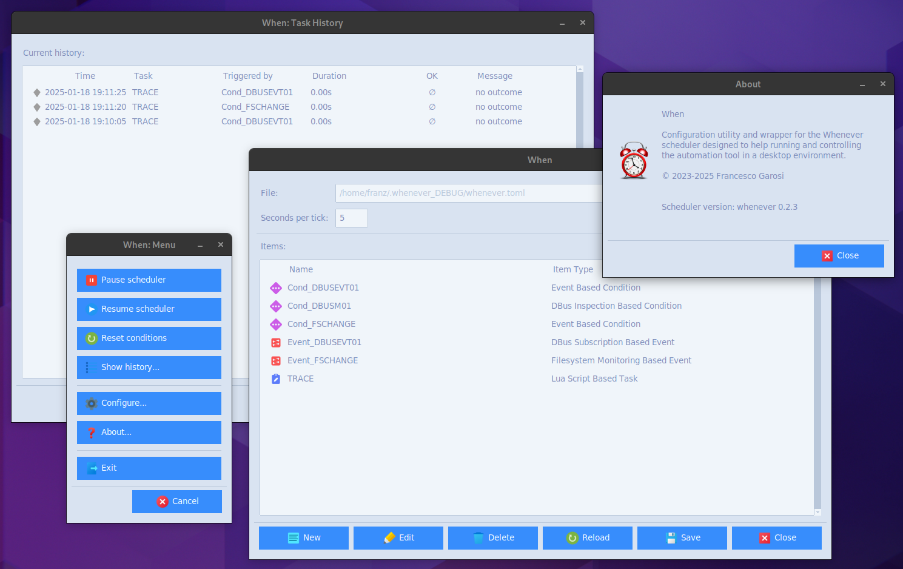

The When Automation Tool
This document describes the new version of When, a Python-based automation tool for desktop environments. This version, instead of incorporating the scheduler, relies on the whenever core, which focuses on reliability and lightweightness, while trying to achieve a good performance even when running at low priority. In this sense, When acts as a wrapper for whenever, both providing a simple interface for configuration and an easy way to control the scheduler via an icon sitting in the tray area of your desktop. This version of When aims at being cross-platform, dynamically providing access to the features of whenever that are supported on the host environment.
When development is hosted on GitHub.
Contents:
- The When Documentation
- Installation
- Tutorial
- Command Line Interface (CLI)
- Main Configuration Form
- System Tray Resident Application
- Native Tasks Editors
- Extra Tasks: Session Related
- Condition Editors
- Time Related Conditions
- Action Related Conditions
- Event Conditions
- Extra Conditions
- Native Events Editors
- Specific Events
- History Box
- Localization
- Application Data Directory
- Generated Configuration File
- Some Considerations on Lua
- Credits
- History
- License